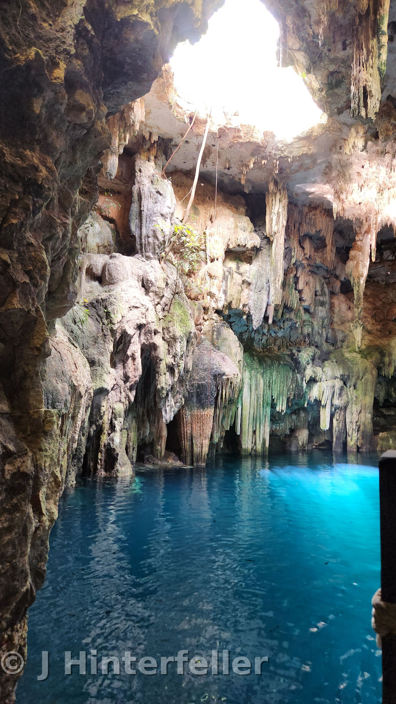
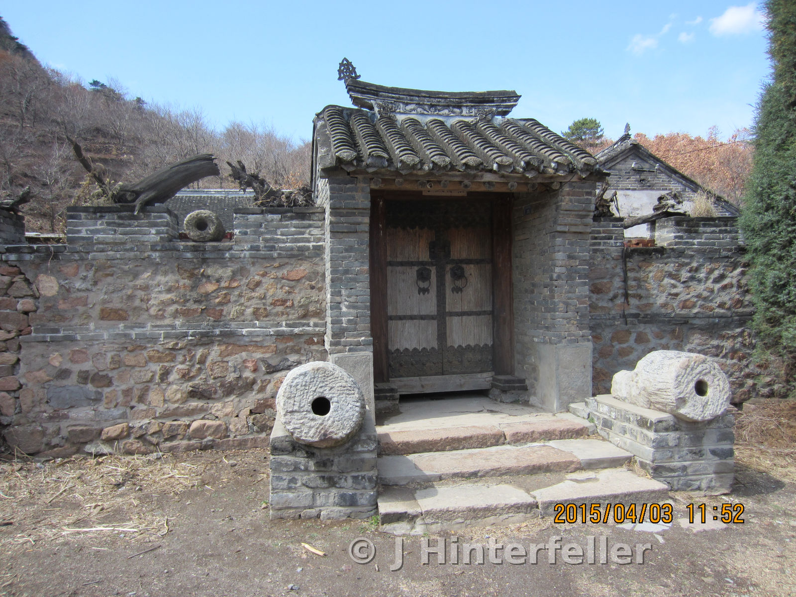

I wonder what's on the other side?.
Travel stories, overlooked places, old roads, ruins, photographs and the pieces of history that rarely make the itinerary.

Four ways in.
The homepage is the cover. Everything else leads somewhere real: a story, a place, a photograph, or something useful.
Travel
Step Away From The Comfort Zone
History
Ruins, forgotten people, strange events and the questions left behind.
Photographs
A growing visual archive from places worth stopping for.
Field Notes
The practical side: routes, mistakes, costs, gear and what I'd do differently.
The Back Porch
The creative room. Fiction, experiments and stories that don't belong anywhere else.
Work
Writing, teaching, photography and content projects. A good site should open doors.

What happened here?
Some places announce their importance. Others sit quietly until somebody bothers to stop, look closely, and ask what came before.
This journal is about that second kind.
Explore history"Life should not be a journey to the grave with the intention of arriving safely in a pretty and well preserved body, but rather to skid in broadside in a cloud of smoke, thoroughly used up, totally worn out, and loudly proclaiming 'Wow! What a Ride!'" The Proud Highway, Hunter S Thompson